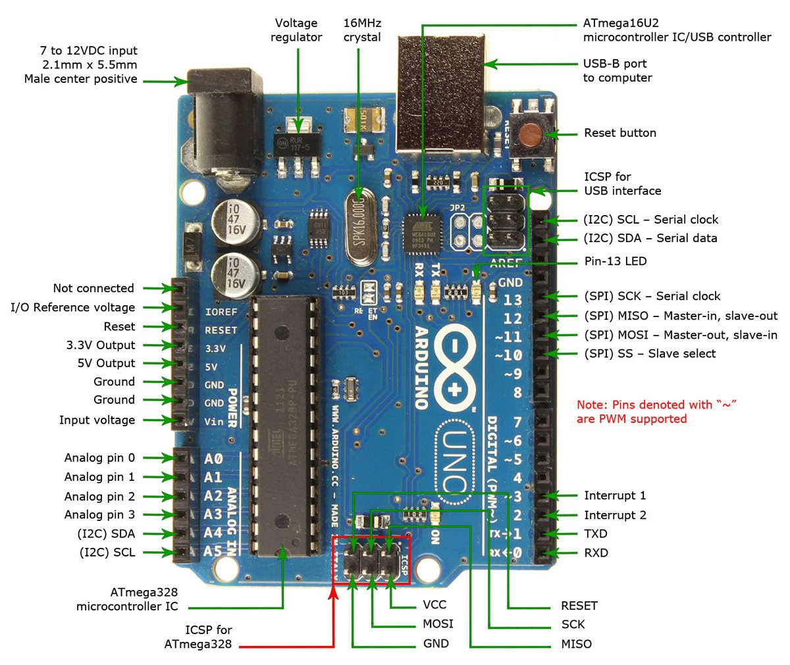
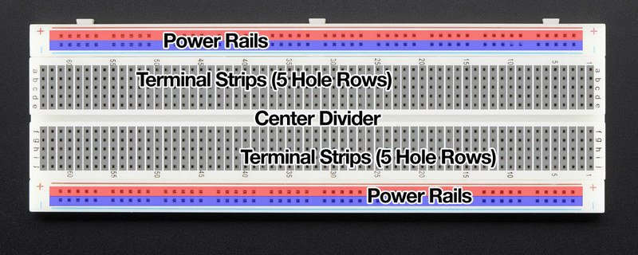

Embedded systems consist of both hardware and software and are used to create products with specific functions. In EP1000, we make use of the Arduino Uno or Arduino Nano as the microcontroller, along with a breadboard to build circuits with, and Arduino IDE 1.8.19 as the integrated development environment (IDE) to develop and test codes for the embedded system. The programming language used was C++.
Tinkercad was used to test and verify the design of circuits before putting together the physical circuit. It provides a variety of components to tinker with and also has many useful examples provided by various users. It also allows users to make use of block coding to gain a better understanding of the circuit and how it functions with the code. Here is an example of what a circuit on tinkercad looks like.

In this module, we made use of the Arduino Uno or Arduino Nano in our embedded system. The Arduino boards are single-board microcontrollers, which serve as a compact integrated circuit, made to control specific operations in embedded systems. They consist of a processor, memory, and input/output (I/O) peripherals. Circuits are constrcuted using the Arduino and breadboard to connect the necessary components. Below is a picture showing how an Arduino Uno board looks like, along with its labelled parts.
Below is a picture showing the internal connection of the breadboard, and how it works.
The (+) represents the power bus and the (-) represents the ground bus.
Arduino IDE was used to effectively create and manage the codes required for the embedded systems that we were contstructing, and also to upload the written code to the Arduino boards so that they will be able to carry out their specified functions. It is a software that is widely used due to its efficiency and flexibility.
Click here to see how an embedded system was used in my final project.